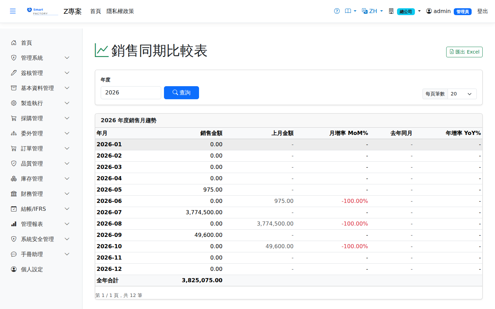

銷售趨勢Sales Trend
路由：/SalesTrend | 銷售金額期間趨勢Route: /SalesTrend | Sales amount trend over time
以月/週呈現銷售金額與數量趨勢，可依客戶、品號篩選，觀察季節性與成長率。Shows sales amount and quantity trends by month or week, filtered by customer or product, to reveal seasonality and growth.

銷售趨勢畫面截圖（示意，實際欄位/資料依權限與查詢條件而異）Sales trend screenshot (illustrative; actual fields and data vary by permission and query criteria)
查詢Search
1
查詢列輸入條件後點「查詢」；欄位標題可點擊排序，清單下方有分頁導航。Enter your criteria on the query bar and click "Search"; column headers can be clicked to sort, and the paging controls sit below the list.
欄位說明Field reference
查詢條件Query criteria
| 條件Condition | 說明Guide |
|---|---|
| 年度Annual | 必填Required 要檢視的年度；報表按月列出該年度十二個月Year to view; the report lists all twelve months of that year |
報表欄位Report fields
| 欄位Field | 說明Guide |
|---|---|
| 年月Month | 統計月份Statistics month |
| 銷售金額Sales Amount | 該月的銷售金額合計（本位幣）Total sales amount for the month (local currency) |
| 上月金額Prev Month | 前一個月的銷售金額，供環比對照Sales amount of the previous month, for a month-on-month comparison |
| 月增率 MoM%MoM% | （本月 － 上月）÷ 上月，反映短期波動(this month − last month) ÷ last month, showing short-term movement |
| 去年同月Same Month LY | 去年同一月份的銷售金額，供同比對照Sales amount in the same month last year, for a year-on-year comparison |
| 年增率 YoY%YoY% | （本月 － 去年同月）÷ 去年同月，排除季節性後的成長率(this month − the same month last year) ÷ the same month last year, growth with seasonality removed |